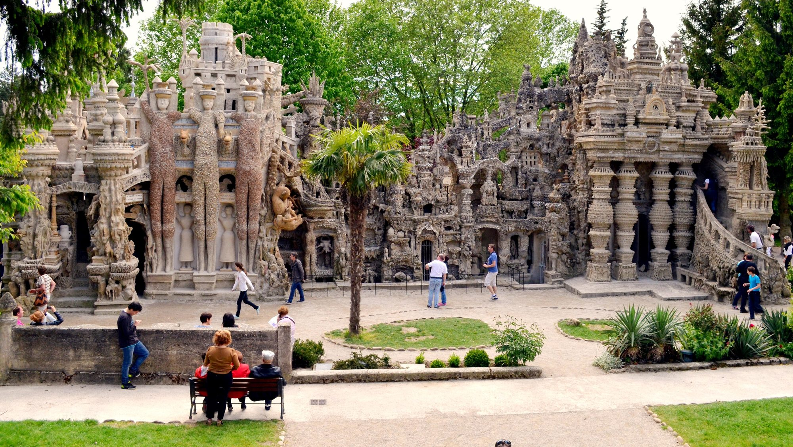

À environ 1h15 des Cabritas, à Hauterives dans le nord de la Drôme, se dresse l'une des œuvres les plus étonnantes de France : un palais de rêve construit à mains nues, pierre après pierre, par un simple facteur rural pendant 33 ans.

L'histoire d'un rêve devenu réalité
En avril 1879, Ferdinand Cheval, facteur rural âgé de 43 ans, trébuche sur une pierre à la forme si étrange qu'elle réveille en lui un songe ancien. Autodidacte, il consacre alors 33 années de sa vie, ses tournées et ses nuits, à bâtir dans son jardin un palais inspiré par la nature, les cartes postales et les magazines illustrés qu'il distribuait au fil de sa tournée. Le bilan de cette œuvre, il l'a lui-même gravé sur la façade nord : « 10 000 journées, 93 000 heures, 33 ans d'épreuves ».
Une œuvre d'art naïf saluée par les plus grands
Dès le 1er janvier 1905, Ferdinand Cheval ouvre lui-même son palais au public, installe un livre d'or et une billetterie. Sa renommée dépasse vite les frontières de la Drôme : dès 1907, des visiteurs étrangers font le déplacement jusqu'à Hauterives. Il faudra attendre les années 1930 pour que des artistes comme Pablo Picasso, André Breton ou Max Ernst saluent, à titre posthume, le génie de cet autodidacte devenu une référence de l'art naïf. Le Palais Idéal est classé Monument historique en 1969, une reconnaissance rare pour une œuvre d'art brut.
Bon à savoir avant votre visite
Comptez une bonne heure pour explorer les façades sculptées, les tourelles et les galeries intérieures du palais, ainsi que le mausolée que Cheval a construit ensuite au cimetière du village. Un espace muséographique complète la visite pour comprendre la genèse de cette œuvre unique. La billetterie est payante, avec tarif réduit pour les enfants.
Infos pratiques depuis Les Cabritas
- Distance depuis Flaviac : environ 1h15 de route
- Meilleure période : toute l'année, site couvert en grande partie
- Idéal pour : sortie insolite, patrimoine, art naïf, sortie en famille
Envie de découvrir le Palais Idéal du Facteur Cheval depuis votre gîte en Ardèche ?
Les Cabritas vous accueillent à Flaviac, au cœur de l'Ardèche, pour un séjour confortable avec piscine privée, à deux pas des plus beaux sites de la région.
Vérifier les disponibilités